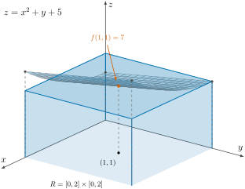
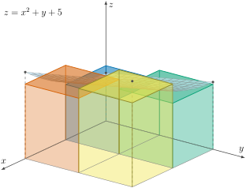
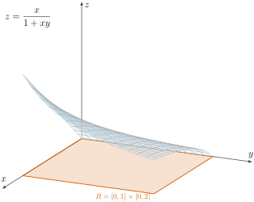

Calculate the double integral \(\displaystyle\int_0^2\!\!\int_0^2 \left(x^2 + y + 5\right)\,dx\,dy\text{.}\)
Section 6 Double and Iterated Integrals Over Rectangles
Before we begin discussing the actual topic of today’s lecture, we will briefly remind ourselves of the concept of area under a function and its relation with definite integrals.
Subsection 6.1 Reminder: Area Under \(y = f(x)\) from \(x = a\) to \(x = b\)
As shown in Figure 6.1, to calculate the area under \(y = f(x)\) from \(x = a\) to \(x = b\text{,}\) we divide the interval \((a,b)\) into \(n\) subintervals and then let the number of subintervals (which is the same as the number of rectangles) approach infinity:
\begin{equation*}
\text{Area} = \lim_{n\to\infty}
\Big[\Delta x\, f(x_1^*) + \Delta x\, f(x_2^*)
+ \cdots + \Delta x\, f(x_n^*)\Big].
\end{equation*}
We also learned that the definite integral of \(f(x)\) from \(x = a\) to \(x = b\) is equal to this area:
\begin{equation*}
\int_{x=a}^{x=b} f(x)\,dx
= \lim_{\Delta x\to 0}\sum_{i=1}^{n} f(x_i^*)\,\Delta x.
\end{equation*}
Diagram Exploration Keyboard Controls
Subsection 6.2 Double Integrals Over Rectangles
As we will see, double integrals can be interpreted geometrically as the volume under a surface \(z = f(x,y)\text{.}\) As an example, consider the surface \(z = x^2 + y + 5\text{,}\) which is shown in Figure 6.2. To estimate the volume under this surface and over the region
\begin{equation*}
R : \{(x,y) : 0 \le x \le 2,\ 0 \le y \le 2\},
\end{equation*}
we can use the point \((1,1)\) in the middle to find the height of the blue cuboid and come up with a very bad estimate of the desired volume.

We can improve the estimate by splitting the region into more squares. For instance, we can split the region into four squares to achieve a better approximation for the desired volume, as shown in Figure 6.3. Similar to finding the area under \(f(x)\text{,}\) if we let the number of splittings go to infinity, our estimation becomes exact, i.e., we find the exact desired volume. The refinement process is animated in Figure 6.4.

In the Riemann sum notation, the approximation of the volume using \(n\) small rectangles is
\begin{equation*}
\text{Volume} \approx \sum_{j=1}^{m}\sum_{i=1}^{n}
f(x_i, y_j)\,\Delta A_{ij}
= \sum_{j=1}^{m}\sum_{i=1}^{n} f(x_i, y_j)\,\Delta x_i\,\Delta y_j,
\end{equation*}
and the exact volume is
\begin{equation*}
\text{Volume} = \lim_{m\to\infty}\lim_{n\to\infty}
\sum_{j=1}^{m}\sum_{i=1}^{n} f(x_i, y_j)\,\Delta x_i\,\Delta y_j.
\end{equation*}
The result of the above limit is defined as the double integral over a rectangular region and is denoted as
\begin{equation*}
\iint_R f(x,y)\,dA
\quad\text{or}\quad
\iint_R f(x,y)\,dx\,dy.
\end{equation*}
For instance, in the example above, we have
\begin{align*}
\text{Volume} \amp= \iint_R f(x,y)\,dA
\ \text{ or }\ \iint_R f(x,y)\,dx\,dy\\
\amp= \int_0^2\!\!\int_0^2 \left(x^2 + y + 5\right)\,dx\,dy.
\end{align*}
Next, we will study how to calculate such integrals.
Subsection 6.3 Calculating Double Integrals as Iterated Integrals
Example 6.5. Example I.
Solution.
To calculate the double integral
\begin{equation*}
\int_0^2\!\!\int_0^2 \left(x^2 + y + 5\right)\,dx\,dy
\end{equation*}
we first use FTC II to integrate with respect to \(x\text{:}\)
\begin{equation*}
\int_0^2 \left(x^2 + y + 5\right)dx
= \left.\left(\frac{x^3}{3} + xy + 5x\right)\right|_0^2
= \frac{8}{3} + 2y + 10 = 2y + \frac{38}{3},
\end{equation*}
\begin{equation*}
\int_0^2 \left(2y + \frac{38}{3}\right)dy
= \left.\left(y^2 + \frac{38}{3}y\right)\right|_0^2
= 4 + \frac{76}{3} = \frac{88}{3}.
\end{equation*}
In calculating double integrals, the following theorem can be very useful.
Theorem 6.6. Fubini’s Theorem (First Form).
If \(f(x,y)\) is continuous throughout the rectangular region \(R: a \le x \le b,\ c \le y \le d\text{,}\) then
\begin{equation*}
\iint_R f(x,y)\,dA
= \int_c^d\!\!\int_a^b f(x,y)\,dx\,dy
= \int_a^b\!\!\int_c^d f(x,y)\,dy\,dx.
\end{equation*}
Therefore, if the integrand satisfies the conditions mentioned in the above theorem, we can change the order of integration. For the previous example, we can first integrate over \(y\text{:}\)
\begin{equation*}
\int_0^2 \left(x^2 + y + 5\right)dy
= \left.\left(x^2 y + \frac{y^2}{2} + 5y\right)\right|_0^2
= 2x^2 + 12.
\end{equation*}
Then, we integrate this function of \(x\text{:}\)
\begin{equation*}
\int_0^2 \left(2x^2 + 12\right)dx
= \left.\left(\frac{2}{3}x^3 + 12x\right)\right|_0^2
= \frac{16}{3} + 24 = \frac{88}{3},
\end{equation*}
which gives us the same result, i.e., \(\displaystyle\int_0^2\!\!\int_0^2 \left(x^2+y+5\right)dx\,dy
= \frac{88}{3}\text{.}\)
Subsection 6.4 An Iterated Integral Requiring Substitution and Integration by Parts
Example 6.7. Example II.
Calculate the double integral \(\displaystyle\int_0^2\!\!\int_0^1 \frac{x}{1+xy}\,dx\,dy\text{.}\)
Solution.
Using Fubini’s theorem, we first integrate over \(y\text{,}\) which means that \(x\) is considered to be a constant. As our substitution, we choose \(u = 1 + xy\) and \(du = x\,dy\text{:}\)
\begin{equation*}
\int \frac{x}{1+xy}\,dy = \int\frac{du}{u}
= \ln|u| + C = \ln|1+xy| + C,
\end{equation*}
\begin{equation*}
\int_0^2 \frac{x}{1+xy}\,dy
= \Big.\ln|1+xy|\Big|_{y=0}^{y=2}
= \ln|1+2x| - \ln(1) = \ln|1+2x|.
\end{equation*}
Next, we integrate \(\ln(1+2x)\) with respect to \(x\) using the method of integration by parts \(\left(\int u\,dv = uv - \int v\,du\right)\text{.}\) We make the following choices for the integration by parts:
\begin{align*}
u = \ln(1+2x) \amp\Rightarrow du = \frac{2}{1+2x}\,dx,\\
dv = dx \amp\Rightarrow v = x.
\end{align*}
Therefore,
\begin{align*}
\int \ln(1+2x)\,dx
\amp= x\ln(1+2x) - \int\frac{2x}{1+2x}\,dx\\
\amp= x\ln(1+2x) - \int\frac{1+2x-1}{1+2x}\,dx\\
\amp= x\ln(1+2x) - \int\left(1 - \frac{1}{1+2x}\right)dx\\
\amp= x\ln(1+2x) - x + \frac{1}{2}\ln(1+2x) + C,
\end{align*}
and hence
\begin{align*}
\int_0^2\!\!\int_0^1 \frac{x}{1+xy}\,dx\,dy
\amp= \int_0^1 \ln|1+2x|\,dx\\
\amp= \left.\left(x\ln(1+2x) - x
+ \frac{1}{2}\ln(1+2x)\right)\right|_0^1
= \frac{3}{2}\ln(3) - 1.
\end{align*}
The surface \(z = \dfrac{x}{1+xy}\) whose volume over \([0,1]\times[0,2]\) we just computed is shown in Figure 6.8.
